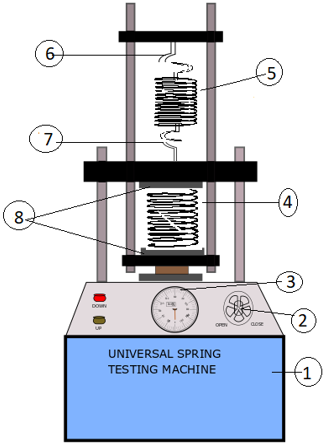

Strength-of-Materials Lab
Strength-of-Materials Lab
>
Universal Spring Testing Machine
Universal Spring Testing Machine


AIM
To study the spring testing machine and determine the design parameters for tension and compression helical spring -
- Max. torque (t)
- Max. shear stress (fs)
- Spring index (c)
- Stiffness of spring (k)
- Modulus of rigidity of spring material (G)
RESOURCES REQUIRED
- Spring testing machine.
- Open coiled helical spring.
- Closed coil helical spring.
- Scale (mounted on spring testing machine).
- Vernier calliper.
THRORY
-
Stiffness of spring(k): -- Spring stiffness is defined as load that comes unit deflection.
K=w/δ Where k = spring stiffness (kg/mm) w = applied load δ = deflectionThe nature of load vs deflection curve decides whether the behaviour of spring is linear or non-linear. Mostly closed coiled helical spring have linear nature. - Spring index(c):
c=D/d Where D= mean distance of coil spring d = spring wire distance c = spring index - Max shear stress(Fs):
Fs = 16.t/πd3 kg/mm2 - Torque (t):--
t=w.r kg-mm r=D/2 mm - Deflection (δ) :--
δ=64wr3n/Gdd3 δ=64w.(D/2)3n/Gdd3 δ=64wD3n/8Gdd3 δ=8wD3n/Gdd3 δ=8.wc3n/Gd4 δ=8wD3n/Gd4 mm - Modulus of Rigidity of spring (G): --
For Steel spring material (G) = 8297.43 kg/mm2
COMPRESSION SPRING:--
A compression spring is an open-coil helical spring that offers resistance to a compressive force applied axially. They are usually coiled at a constant diameter, though they can be coiled in other needed forms such as conical, concave (barrel), convex (hourglass), or various combinations of these. Compression springs are used compression springs are fabricated from round wire. Compression springs are used to keep components from meeting.

TENSION SPRING:--
A Tension spring resist the pulling force that is placed upon them and this creates a sling back effect when the force is removed, causing it to return to its original shape .This function makes them ideal for lifting heavy objects and assisting in the lifting or dispersing of certain loads. Tension springs usually have hooks on the ends to facilitate the function of being extended. Tension springs are mainly used to hold two components together.

SPRING TESTING MACHINE:--
- It is used for determining the behaviour of spring while in compression or tension up to a max capacity if 300kg.
- The machine consists of a base unit inside which is housed a weighting system. The machine consist steel closed head and steel base. the hydraulic jack of 10tone capacity is fixed to base.
- A dial in front of a base unit is a load indicator which indicates the load being applied to a spring under test. The deformation undergone by spring can be observed from graduated scale on which a pointer move in case spring being tested under compression, it is to be placed between compression plates, and in case spring to be tested under tension it is located under upper tension book.
- Two vertical pillars are held by backer supported a beam whose position can be altered, if required. A pointer fixed on this beam slides over fixed scale.
- The motorized pumping unit, which is of plunger type housed in the base unit and is driven by a single phase 220v ac supply electric motor.
- The pumping unit is a separate unit connected to the jack by means of [pressure tube] the general construction of machine is robust and leak proof.
- The machine is fitted with a handle wheel control marked slow and fast, which enables the scale of application of load to be varied the machine is equipped with facilities for hand pumping in case of power failure.
- The helical spring testing machine is based on the hydraulic system.
- For helical steel spring material (G) = 8297.43kg/mm2.
DIAGRAM:--
- Base unit
- Hand liver
- Dial (load indicator)
- Compression spring
- Tension spring
- Upper tension hook
- Lower tension hook
- Compression plates